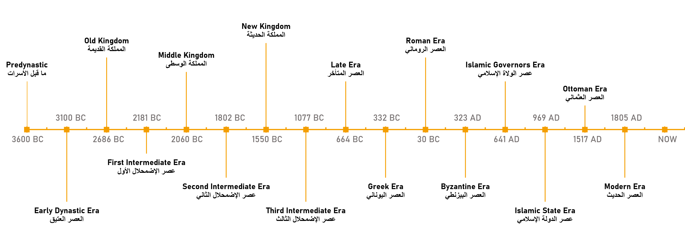
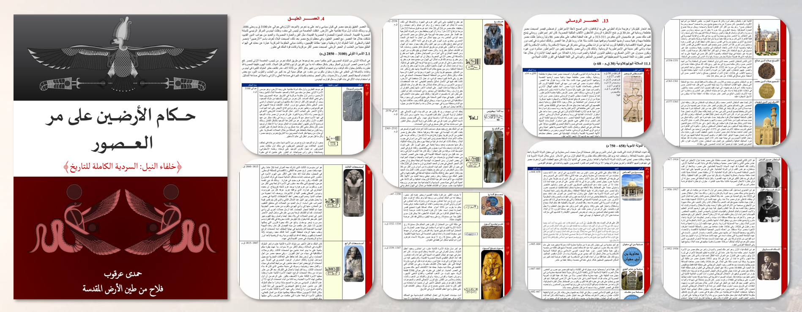
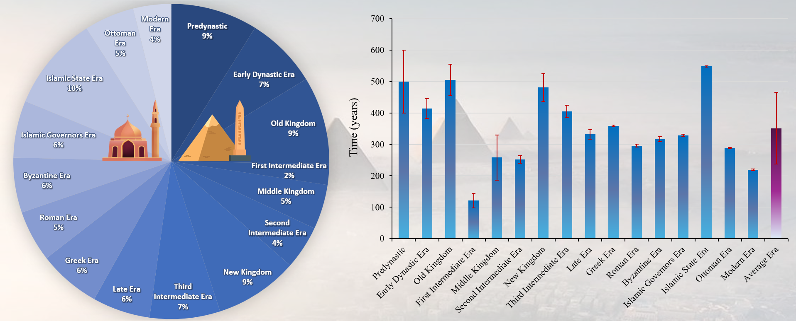

History of Egypt
Alongside my work in computational materials, I am developing a long-term historical framework for understanding Egypt as a continuous civilizational record rather than a set of disconnected periods.

Why is the History of Egypt Unique?

Egypt occupies a uniquely continuous place in world history. Few regions can be studied across more than five millennia within the same territorial and civilizational frame. Its historical record is remarkable not simply because it is ancient, but because it preserves an unusually strong continuity of statehood, governance, and cultural identity.
-
5,200 years of Egypt being a state.
A territorially defined political unit with central authority, bureaucratic continuity, and shared cultural and religious institutions. -
Egypt has almost always been under structured governance.
Across dynasties, empires, caliphates, sultanates, khedival rule, monarchy, and republic, Egypt has remained politically organized rather than historically fragmented. -
There is no true “civilizational break,” only transitions.
Political systems, religious forms, and cultural expressions changed over time, but Egypt’s historical development remained continuous.
Ongoing Book: Rulers of the Two Lands
One of my long-term history projects is an ongoing book titled Rulers of the Two Lands. The central idea is simple but powerful: across roughly 5,200 years, we know who governed Egypt in almost every single year.
This makes Egypt historically exceptional. It means that a near-complete list can be assembled of Egypt’s rulers—kings, pharaohs, governors, emperors, caliphs, sultans, khedives, monarchs, and presidents—with virtually no major gaps in the sequence of authority.
The project aims to organize that continuity into a coherent narrative of rule, legitimacy, governance, and state development across the full span of Egyptian history.

Multiscale Framework for Reuniting Egypt’s History
I am also developing an ongoing concept paper titled “Reuniting the History of Egypt: A Sixteen-Era Framework Toward a Unified Chronology.”
Egypt’s history has long been divided into separate compartments—Ancient, Greco-Roman, Islamic, and Modern—each often studied through different disciplinary traditions as if they were independent historical experiences. This fragmentation, reinforced by colonial-era classifications and later repeated in popular and religious narratives, has limited the development of a unified and rigorous methodology for studying Egypt as one continuous historical record.
In response, this framework proposes a sixteen-era chronological model that reinterprets more than five millennia of Egyptian history within a single analytical structure. Each era, averaging roughly 350 years, is defined by distinctive forms of governance and cultural expression while remaining part of one uninterrupted historical continuum.
The goal is to provide a more disciplined and evidence-based foundation for understanding Egypt’s long historical trajectory—one that connects political change, cultural transformation, and institutional continuity across the full span of its history.
The Big Picture

Each era lasts on average about 351.5 years.